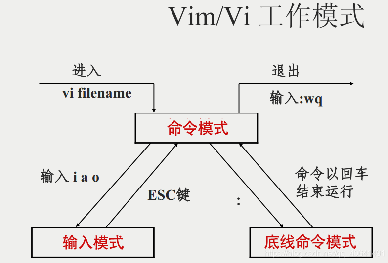

Linux系统的组成
Linux包含了系统内核以及系统级应用程序
系统提供内核+系统级程序的完整封装，称之为Linux发行版，例如centos和Ubuntu
Linux只有一个顶级目录：根目录 /
出现在开头的 / 表示根目录
出现在后面的 / 表示层次关系
例如：/test/hello.txt
Linux命令
Linux命令基础
命令行：Linux终端，是一个命令提示符页面
命令：即Linux程序，一个命令就是一个可执行程序
Linux命令基础格式
command [-options] [parameter]
command：命令本身
-options：选项，行为细节
parameter：命令参数，多用于命令指向目标
注：以下命令选项大部分只写了常用的，若想深入学习请查看Linux命令详细文档
ls命令
其作用是在命令行中以平铺的的形式展示当前工作目录下的内容（文件以及文件夹）
HOME目录：每一个用户在Linux系统的专属目录，默认在：/home/用户名
当前工作目录：Linux在执行命令时，需要一个工作目录，打开命令行程序，默认设置工作目录在用户的HOME目录
ls命令的参数与使用
1 | ls [-a -l -h] [linux路径] |
语法中的选项可组合使用，例如:
1 | ls -l -a ... |
目录切换相关命令
cd命令
其作用是切换工作目录
语法：cd [linux路径]
cd 无需选项，只有参数
cd直接执行，不写参数，回到用户的HOME目录
pwd命令
其作用是查看当前工作目录
pwd命令无选项，无参数，直接输入pwd即可
直接输出当前所在的工作目录
相对路径、绝对路径和特殊路径符
绝对路径：以根路径为起点，路径描述以 / 开头
相对路径：以当前目录为起点
特殊路径符：
1 | . #表示当前目录 cd ./Desktop = cd Desktop |
创建目录命令mkdir
其作用是创建目录
1 | mkdir [-p] linux路径 #-p 表示自动创建不存在的父目录 |
创建文件夹需要修改权限，确保操作均在HOME目录内，不要再HOME外操作，涉及到权限问题，HOME外无法创建成功。（需要使用带root权限，后续会说明）
文件操作命令
touch命令
其作用是创建文件
1 | touch linux路径 #这边的路径可以使用相对路径、绝对路径和特殊路径符 |
cat命令
其作用是查看文件内容
1 | cat linux路径 #这边的路径可以使用相对路径、绝对路径和特殊路径符 |
more命令
其作用也是查看文件内容
1 | more linux路径 #这边的路径也可以使用相对路径、绝对路径和特殊路径符 |
cat和more的区别：
| 区别 | |
|---|---|
| cat | cat是一次性显示整个文件的内容，还可以将多个文件连接起来显示，它常与重定向符号配合使用，适用于文件内容少的 |
| more | more和less一般用于显示文件内容超过一屏的内容，并且提供翻页的功能。more比cat强大，提供分页显示的功能，less比more更强大，提供翻页，跳转，查找等命令。而且more和less都支持：用空格显示下一页，按键b显示上一页 |
| less |
cp命令
其作用是复制文件/文件夹
1 | cp [-r] 参数1 参数2 |
mv命令
移动文件/文件夹
1 | mv 参数1 参数2 |
rm命令
删除文件/文件夹
1 | rm [-r -f] 参数1 参数2 …… |
注：普通用户删除内容不会弹出内容提示，只有root管理员用户删除内容会有提示，一般用户用不到-f选项
1 | rm [-r -f] -通配符 |
grep、wc和管道符
grep命令
其作用是从文件中通过关键字过滤文件行
1 | grep [-n] 关键字 文件路径 |
wc命令
其作用是统计文件的行数、单词数量等
1 | wc [-c -m -l -w] 文件路径 |
管道符命令 |
将管道符左边命令的结果，作为右边命令的输入
1 | cat test.txt | grep fgui | wc -l #表示test文件的内容作为grep文件路径的输入，查询出包含fgui关键字的信息，在作为wc文件路径中的输入，得到信息中所包含的行数 |
查找命令
which命令
查看所使用的的一系列命令的程序文件存放的位置
1 | which 要查找的命令 |
find命令
按文件名查找文件
1 | find 起始路径 -name "被查找的文件名" #可以使用通配符 |
按文件大小查找文件
1 | find 起始路径 -size +/- n[kMG] |
echo命令
可以在命令行中输出指定内容
1 | echo 输出的内容 #一般用""包围输出的内容 |
反引号 `
1 | echo `pwd` #可以显示出pwd命令行所执行的结果 |
重定向符 >和>>
1 | #将左侧命令结果覆盖写入到符号右侧指定的文件中 |
tail命令
可查看文件尾部内容，跟踪文件的最新更改
1 | tail [-f -num] linux路径 |
vi编辑器
三种工作模式

命令模式：此模式下，所敲的按键编辑器都理解为命令，以命令驱动执行不同的功能
输入模式：又叫编辑模式、插入模式，可对文件内容进行自由编辑
底线命令模式：以 : 开始，用于文件的保存、退出， w 保存 q 退出
1 | vim 文件路径 |
命令模式常用快捷键
1 | dd #删除当前行 |
su和exit命令
1 | su [-] [用户名] |
sudo命令
为普通命令授权，临时以root身份执行
1 | sudo 其他命令 |
操作流程：切换到root用户，执行visudo命令，在文件最后添加 用户名 ALL=(ALL) NOPASSWD:ALL
用户和用户组
可配置多个用户和用户组
用户可以加入多个用户组中
linux中对权限的管理有两个级别：
针对用户的权限控制
针对用户组的权限控制
用户组管理
注：须root用户执行
1 | groupadd 用户组名 #创建用户组 |
用户管理
注：须root用户执行
1 | useradd [-g -d] 用户名 #创建用户 |
权限信息
drwxf-xr-x 3 fgui fgui
注：1.表示第一个下划线，以此类推
1.表示文件，文件夹的权限控制信息
2.表示文件，文件夹所属用户
3.表示文件，文件夹所属用户组
第一个下划线表示的含义：
| 1 | 2 | 3 | 4 | 5 | 6 | 7 | 8 | 9 | 10 |
|---|---|---|---|---|---|---|---|---|---|
| -或d或l | r或- | w或- | x或- | r或- | w或- | x或- | r或- | w或- | x或- |
-符号 表示文件
d符号 表示文件夹
l符号 表示软链接
2~4 表示所属用户权限
r 读权限 w 写权限 x执行权限
5~7 表示所属用户组权限
8~10 表示其他用户权限
chmod命令
修改文件、文件夹的权限细节，只能是文件、文件夹的所属用户或root有权修改
1 | chmod [-R] 权限 文件或文件夹 |
权限位置可以直接使用类似于二进制的方式
1：–x 2：-w- 3：-wx 4：r– 5：r-x 6：rw- 7：rwx
chown命令
修改文件、文件夹的所属用户、用户组（只可root执行）
1 | chown [-R] [用户][:][用户组] 文件或文件夹 |
yum命令（centos）
在centos中，使用yum命令在root用户下联网管理软件安装
1 | yum [-y] [install | remove | search] 软件名称 |
apt命令（Ubuntu）
在Ubuntu中，使用apt命令在root用户下联网管理软件安装
1 | apt [-y] [install | remove | search] 软件名称 |
systemctl命令
能够被systemctl管理的软件，一般称之为服务。
其可以控制服务的启动、关闭、开机自启动。
1、系统内置服务均可被systemctl控制
2、第三方软件，如果自动注册了可被systemctl控制
3、第三方软件，如果没有自动注册，则可以进行手动注册
1 | systemctl start | stop | status | enable | disable 服务名 |
软链接
可将文件、文件夹连接到其他位置，类似于windows系统的快捷方式
1 | ln -s 参数1 参数2 |
date命令
可以查看日期和时间，并可以格式化显示形式以及做日期计算
1 | date [-d] [+格式化字符串] |
格式化字符串：
%Y 年 %y 年份后两位数字（00_99） %m 月 %d 日 %H 小时 %M 分钟 %S 秒 %s 时间戳，自1970-01-01 00:00:00 UTC到现在的秒数
修改Linux时区
使用以下命令可以修改时区：
1 | rm -f /etc/localtime |
ntp的作用
可自动联网同步时间，也可ntpdate -u ntp.aliyun.com 手动校准
网络相关命令
ping命令
其可以测试到某服务器是否可联通
1 | ping [-c num] ip或主机名 #-c符号 表示测试的次数 |
wget命令
可进行网络文件下载
1 | wget [-b] url #-b符号 后台下载 |
curl命令
可以发起网络请求
1 | curl [-O] url #-O符号 用于下载使用 |
Linux端口
端口分为物理端口和虚拟端口
IP只能确定计算机，通过端口才能锁定要交互的程序
端口的划分
1、公认端口：1~1023，用于系统内置或常用知名软件绑定使用
2、注册端口：1024~49151，用于松散绑定使用（用户自定义）
3、动态端口：49151~65535，用于临时使用（多用于出口）
查看端口占用
1 | nmap IP地址 #查看指定IP的对外暴露端口 |
进程相关
进程拥有独立进程号（ID）
1 | ps -ef #查看进程信息 |
top命令
类似于Windows任务管理器，查看CPU、内存、进程的信息
df命令
查看磁盘使用率
1 | df [-h] #可看到人性化的数据 |
iostat命令
查看磁盘速率等信息
sar命令
查看网络情况
1 | sar -n DEV #查看网络情况 |
环境变量
其是一组信息记录，类型是keyValue型（键值对），用于操作系统运行的时候记录关键信息
env命令
可查看当前系统配置的环境变量，**$**符号可以取出环境变量的值
自定义命令搜索路径
1 | export PATH=$PATH:自定义路径 |
修改环境变量
临时生效（重新连接会失效）
1 | export 名称=值 |
永久生效
1 | ~/bashrc #针对用户，在此文件中配置 |
source命令
source命令的功能是用于从指定文件中读取和执行命令，通常用于被修改过的文件，使之新参数能够立即生效，而不必重启整台服务器。
1 | source 文件 |
Linux常用压缩格式
tar格式 归档文件，无压缩效果
gzip格式 gzip压缩文件，有体积压缩效果
tar命令
1 | tar [-z -x -v -c -f -C] 参数…… |
常用组合：
| tar | gzip | |
|---|---|---|
| -cvf | -zcvf | 压缩 |
| -xvf | -zxvf | 解压缩 |
zip命令
1 | zip [-r] 参数 #-r 压缩文件夹使用 |
unzip命令
1 | unzip [-d] 参数 #-d 指定解压去的目录 |